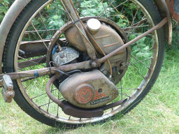
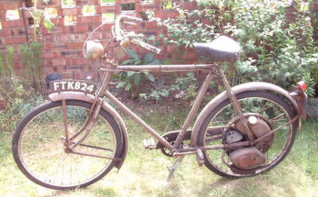
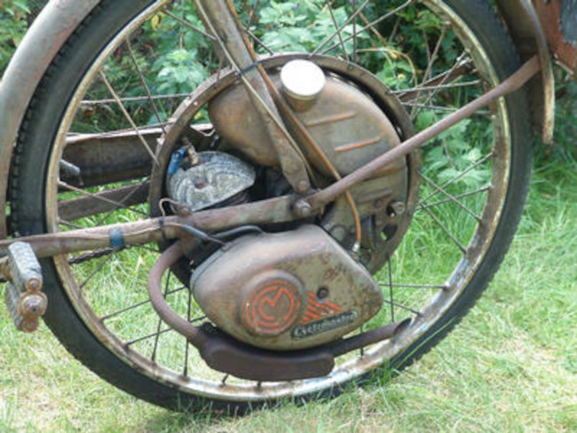

They don’t make them like that any more: the Cyclemaster

If BMW’s C1 represents the top end of the motorcycle technology spectrum, the Cyclemaster represents the bottom end. Of course, a period of nearly fifty years of technological development separates these two iconic machines, so this is no great surprise. The Cyclemaster wasn’t a complete motorcycle: it was a petrol engine embedded in a bicycle wheel. The Cyclemaster design originated in the Nertherlands in the 1940s. A huge number of Cyclemaster engines were produced in the 1950s, and supplied to various manufacturers to fit in their frames. My Cyclemaster machine was made by Mercury: an obscure British bicycle manufacturer which produced Cyclemaster-based motorcycles in the early 50s.

As you can see from the photo, apart from the wheel-mounted engine, and the cables and hand levers that control it, the rest of the bicycle is pretty much standard. Well – standard for a 1950’s butcher’s bike, anyway. Installing the Cyclemaster engine wasn’t very different from installing a regular bicycle wheel, as it was mostly self-contained. Of course you had to attach the throttle and clutch levers, but even the petrol tank was included in the wheel. A nice feature was that the alternator that powered the engine’s crude ignition system could also power the front and rear lights.
On my model, the engine has a 32cc capacity, which I believe was the largest of this type ever made. The supplier claimed it to be capable of reaching speeds of 25 mph, but you’ll only try this once. It runs on a mixture of petrol and two-stroke oil, in a ratio about 20:1, and enthusiasts have reported economy figures of over 90 mpg.

A great advantage of the Cyclemaster was its simplicity. One of its design goals was that the rider could strip down and reassemble the engine in a lunch break. As the engine’s inlet and exhaust ports are operated by the rotary action of the piston, there are no valves or pushrods to worry about, or adjust. In fact, there are hardly any moving parts at all. To start the Cyclemaster, you set the throttle about half-way, disengage the clutch using the lever on the right handlebar, pedal at a brisk pace, then drop the clutch. The wheel motion turns over the engine, providing ignition power via the alternator. If you’re lucky, the engine will fire up, and away you go.
When you’re buzzing along under engine drive, you can adjust your speed using the handlebar-mounted throttle. There’s only one brake [but see the update below] - a caliper on the front wheel - and when you pull up hard on the brake lever it has the effect of disengaging the clutch as well. The seems an ingenious mechanism at first but consider: the bike with its engine weighs about a hundred pounds. When it’s hurtling along, the single caliper brake doesn’t generate a huge amount of stopping power. By disengaging the clutch when you brake, you lose any engine braking that you might otherwise get. On a modern bike, the throttle is spring-loaded, so you naturally tend to release it when you reach for the brake. On the Cyclemaster, the throttle holds its position, so you wouldn’t get any engine braking anyway. So whether the combined brake/clutch lever is a good idea or not is a matter for debate.
The 1950s advertising brochures for Cyclemaster mostly show a variety of gents in jackets and ties, often smoking pipes, pootling around the countryside with big grins on their faces. For many people a Cyclemaster bike was, no doubt, an affordable introduction to powered transport. I believe the engine sold for under £30 in the 50s – about £900 in today’s money. A decent-quality e-bike motor and battery costs about the same today.
Still, Cyclemasters enjoyed only a brief period of popularity in the UK: I don’t think any were produced after 1960. I don’t remember ever seeing one on the road in my childhood in the 60s.
The reality is that riding one of these machines is not much like their advertisers would have us believe. Its heavy weight, coupled with its totally inadequate braking performance, makes riding one anywhere other than a completely empty road – or, better still, a field – a terrifying experience. The only suspension is the springs underneath the rock-hard leather saddle so, with the upright riding position, every bump in the road is transmitted straight to your spine, via your butt. This was true at the time for pedal cycles as well but, if you were maintaining 20+ mph, you probably wouldn’t be sitting on the saddle.
Most likely it was the decreasing cost of other mass-produced powered cycles that heralded the demise of the Cyclemaster. A moped was – and is – a motorcycle with pedals like the Cyclemaster, but mopeds were purpose-built to contain an engine. They had plush, padded seats and, most importantly, capable brakes. Some could even carry a passenger, if you weren’t in a hurry. Cyclemaster-based powered bikes were always cheaper that mopeds but, by 1960, they probably weren’t so much cheaper that people wanted to risk their lives on one. Or their haemorrhoids.
Incredibly, it’s still legally possible to ride a Cyclemaster on UK roads. There are specialist insurers, and these ancient machines benefit from certain, vintage-vehicle exemptions from regulation. There is still an active owner’s group, which holds regular rallies.
Would I want to use one for day-to-day transport? Not at all. For a start, I’d have to wear a crash helmet, as legally the machine is a motorcycle. Mixing the fuel and oil is a drag but, to be fair, no more a drag than when I have to do it for my forestry machinery. The engine has a tiny muffler in its exhaust, but it’s still loud at top speed – a bit like a chainsaw, in fact. The fundamental problem, though, is that it’s terrifying to ride. It’s kind-of fun to do it once, just to show that it’s possible; after that, I’d rather ride my pedal cycle any day.
None of this is important, of course, if you want to own a piece of motorcycling history.
Update
I recently received a email from a gentleman named Bob Monro who, it turned out, was an early adopter of the Cyclemaster. With his permission, I reproduce it in full here. I don’t think my Cyclemaster had the pedal-operated brake Mr Monro describes, but perhaps it did, and it wasn’t working properly, as he describes.
====================================================
Kevin,
Thanks for your article re these great machines.
I say great as I owned 2 of these and did thousand of miles on them. Most of this was in London. I then handed then on to my younger brother who also use it for a number of years.
You are right about the “Disk” valve and I used to take great delight on friends who would tell me that there “Suzuki” had an “revolutionary rotary valve” There was a look of disbelief when I told them that MY “TOY” machine also had this revolutionary device.
My engine was fitted into a “Normal” roadster bicycle frame. The cycle master was unusual in having a clutch, most “Mini-Motors” you used to lift the whole motor on or off the rear wheel. The alternator gave out i thing about 6 or 7 watts. If you could find and old “Pifco” lighting set this would give you very good light output. The cycle-master also had the advantage that when when you stopped at lights,lift the clutch and the engine kept on and you had lights.
I am slightly surprised at your comments about lack of brakes. I had both cc and cc models and both had rear peddling brakes. I have heard other owners say the brakes were useless.
Most owners did not know that the cycle master had what is called in America a”Coaster Brake” This meant that when you wanted to stop you just peddled backwards, the harder you pressed back-wards the better the braking. I can assure you that it worked! Living in London even tn those days people had no respect for cycles let alone those with a so called engine.
The main reason this brake did not seem to work was that you had to OIL it! I never understood WHY it worked, the same as I cannot understand why some car’s used to be fitted with an “Oil filled clutch” and you had to keep that topped up.
If you look at the main spindle hub you should see a small “Oilier” if not you should see a large, flat black spring going all the way around the hub. The oiler is fixed with a little spring cap that you can lift up. It does not matter what type you have, if an oiler lift the cap and put some oil in. The spring type you just move it one one or the other (some of these even had a small “dimple” to cover the oil hole) This type was nearly always fitted to “Roadster” push bikes of that era.
I soon learnt to know when it needed oil when you found yourself behind a big London bus and his stop lights went on and your cycle master did not slow down.
I used to travel from Kentish Town to Kennington Oval every day to work. Of a weekend I would go out to Epping Forrest or London Airport.
It used to cost me under one pound it “Fill her Up” including oil! One other thing I remember was that the power? output was .08 BHP at 4200 rpm! The exhaust would soon carbon up at the milage I did but you soon knew when it needed cleaning. (lack of power!) I had a spare so it did noe have to be that much of a chore.
I hope that this has helped you.
Regards
Bob
Have you posted something in response to this page?
Feel free to send a webmention
to notify me, giving the URL of the blog or page that refers to
this one.